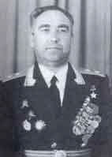

Шапошников Матвей Кузьмич
Биографию подготовил Сергей Каргапольцев
С сайта http://www.warheroes.ru

Шапошников Матвей Кузьмич - командир 178-й танковой бригады
10-го танкового корпуса 40-й армии Воронежского фронта, полковник.
Родился 29 ноября 1906 года в слободе Алексеевке Воронежской губернии (ныне
город Белгородской области) в семье крестьянина. Украинец. Член ВКП(б)/КПСС с
1930 года. В 1920 году окончил неполную среднюю школу. Работал забойщиком на
шахте "Коммунар" в Кривом Роге.
В Красной Армии с сентября 1928 года, добровольно поступил в Одесскую военную
пехотную школу. Затем учился в Москве на мототехкурсах усовершенствования
командного состава, откуда вышел командиром танковой роты. В 1940 году окончил
Военную академию имени М. В. Фрунзе. Участник советско-финляндской войны
1939-40 годов.
Великую Отечественную войну подполковник Шапошников встретил в должности
начальника оперативного отдела 37-й танковой дивизии (Юго-Западный фронт). В
июле-октябре 1942 года полковник Шапошников - начальник штаба 19 танкового
корпуса. В разгар Курской битвы он уже командовал 178-й танковой бригадой.
Полковник Шапошников отличился в боях за реку Днепр. 21 сентября 1943 его бригада
в составе корпуса с ходу освободила город Переяслав (с 1943 года - Переяслав-Хмельницкий).
В ночь на 24 сентября в районе хутора Монастырёк (Кагарлыкский район Киевской
области) Шапошников во главе мотострелкового пулемётного батальона бригады
форсировал реку и захватил плацдарм. Отражая многочисленные контратаки
противника, организовал переправу своей бригады и обеспечил преодоление реки
другими частями.
Указом Президиума Верховного Совета СССР от 10 января 1944 года за образцовое
выполнение заданий командования и проявленные мужество и героизм в боях с
немецко-фашистскими захватчиками, полковнику Шапошникову Матвею Кузьмичу
присвоено звание Героя Советского Союза с вручением ордена Ленина и медали
"Золотая Звезда" (№ 3195).
В апреле 1944 года Шапошникова назначили командиром 10-го танкового корпуса, в
Кремле вручили орден Ленина и медаль "Золотая Звезда". 2 июля 1944
года ему было присвоено звание "генерал-майор танковых войск". Боевой
путь закончил в Австрийских Альпах, встретившись с союзниками. На параде Победы
24 июня 1945 года на Красной площади генерал-майор Шапошников возглавлял
сводный батальон танкистов 3-го Украинского фронта.
После победы генерал Шапошников остался в Вооруженных силах. В 1949 году
окончил Военную академию Генштаба и был направлен в Группу советских войск в
Германии. Служил начальником штаба, заместителем командующего танковой армией.
С 1955 года генерал-лейтенант Шапошников пять лет командовал 2-й гвардейской
танковой армией.
В 1960-е годы был заместителем командующего Северо-Кавказского военного округа.
Во время событий в городе Новочеркасске в июне 1962 года отказался выполнять
приказ о применении оружия против рабочих, вышедших на демонстрацию. Позднее
пытался предать гласности информацию о новочеркасской трагедии. В 1966 году
генерал-лейтенант Шапошников уволен в отставку. Против него было возбуждено
уголовное дело по обвинению в антисоветской пропаганде, в 1967 году - исключен
из партии. Фактически оказался в опале. Реабилитирован 6 декабря 1988 года.
Жил в городе Ростов-на-Дону. Умер 28 июня 1994 года.
Награжден двумя орденами Ленина, тремя орденами Красного Знамени, орденом
Богдана Хмельницкого 2-й степени, тремя орденами Красной Звезды, медалями.